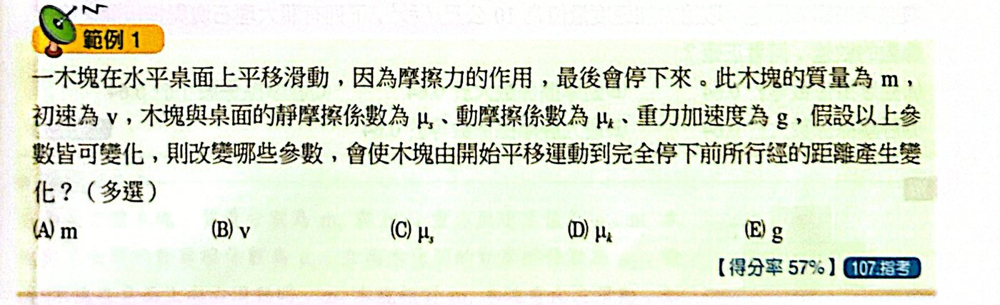
看答案與詳解收起
答(B)(D)(E)
解
木塊滑動時只受動摩擦力：a ＝ μkmg/m ＝ μkg（減速）
停下前走的距離 d ＝ v²/(2μkg) ⇒ 只和 v、μk、g 有關；m 約掉了，μs 只管「開始滑」不管「滑多遠」。
上一單元的題目大多假設「光滑」，這一單元把真實世界最常見的阻力──摩擦力──加進來。第一個焦點處理摩擦力：它什麼時候出現、朝哪個方向、有多大；第二個焦點處理「靜力平衡」：物體不但不能移動，也不能轉動，所以除了力要平衡，還要多一個條件──力矩平衡。
當物體與接觸面之間有相對運動，或有相對運動的企圖時，接觸面會產生一個平行接觸面、阻止相對運動的力，這就是摩擦力。注意它阻止的是「相對運動」，不一定和物體的運動方向相反──例如你走路時，地面給腳的摩擦力是向前的。
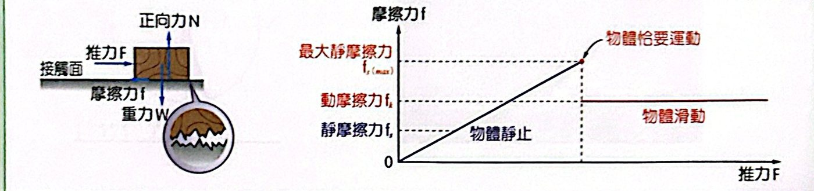
從上圖可以看出摩擦力分成三種狀態：物體還沒動時是靜摩擦力，它會「看情況」調整大小；快要動的那一瞬間達到上限，叫最大靜摩擦力；滑起來之後變成大小固定的動摩擦力，而且通常比最大靜摩擦力小一點（所以推東西時「起步最費力」）。
靜摩擦力是「被動」的：你推多少，它就回推多少，剛好讓物體不動。推 10 N 它就是 10 N，推 20 N 它就是 20 N。所以不能用 μN 算靜摩擦力，要用「平行接觸面方向合力為零」來求。
先假想「如果沒有摩擦，物體會往哪裡滑」，靜摩擦力就朝相反方向。
看到 μs 就直接寫 f ＝ μsN。只有題目說「恰要滑動」時才能這樣寫。
兩個表面在顯微鏡下都是凹凸不平的，真正接觸的只有許多小凸點。壓得愈緊（N 愈大），真正接觸的面積愈大、卡得愈緊，摩擦力就愈大。
把木塊立起來放，看起來接觸面積變小了，但每單位面積被壓得更緊；兩個效果剛好抵消。所以摩擦力只看 N 和表面的粗糙程度（μ）。
靜止時凸點有時間互相「咬住」；滑動時來不及卡緊，所以動摩擦力比較小，一般小 20%～30%。
把物體放在可調整傾角的斜面上，慢慢把斜面抬高，就能直接量出摩擦係數──這是很漂亮的一個實驗設計。
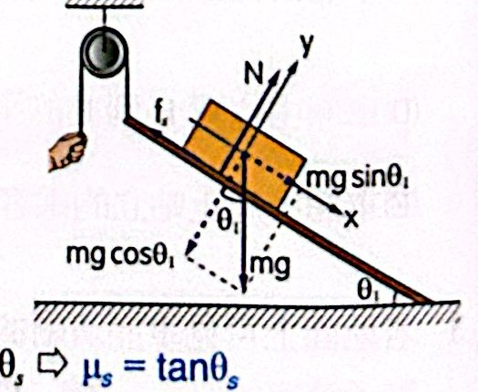
沿斜面：mg sinθ ＝ f；垂直斜面：N ＝ mg cosθ
- 恰要下滑時 f ＝ μsN：mg sinθs ＝ μsmg cosθs ⇒ μs ＝ tanθs
- 等速下滑時合力為零、f ＝ μkN：同理 μk ＝ tanθk
m 和 g 全部約掉，所以只要量角度就知道摩擦係數，和物體多重無關。
因為 μk ＜ μs，等速下滑的角度 θk 會比「開始下滑」的角度 θs 小──斜面一旦讓物體開始滑，要稍微放低一點它才會等速。
摩擦力永遠和相對運動方向相反，所以上滑和下滑的加速度不一樣大：上滑減速得比較快，下滑加速得比較慢。常考「上滑到最高點後會不會滑回來」：要看 mg sinθ 是否大於 μsmg cosθ，也就是 tanθ 是否大於 μs。

木塊滑動時只受動摩擦力：a ＝ μkmg/m ＝ μkg（減速）
停下前走的距離 d ＝ v²/(2μkg) ⇒ 只和 v、μk、g 有關；m 約掉了，μs 只管「開始滑」不管「滑多遠」。
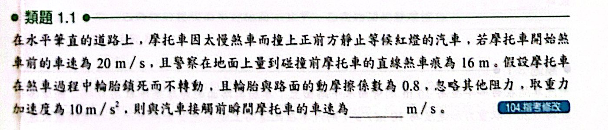
a ＝ μkg ＝ 8 m/s²（減速）
v² ＝ 20² − 2 × 8 × 16 ＝ 400 − 256 ＝ 144 ⇒ v ＝ 12 m/s
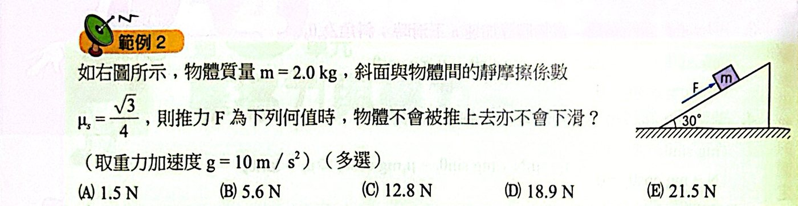
mg sin30° ＝ 10 N；N ＝ mg cos30° ＝ 10√3 N；fs(max) ＝ (√3/4)(10√3) ＝ 7.5 N
- 推力太小會下滑：F ≥ 10 − 7.5 ＝ 2.5 N
- 推力太大會被推上：F ≤ 10 ＋ 7.5 ＝ 17.5 N
在 2.5 N～17.5 N 之間的是 5.6 N、12.8 N。
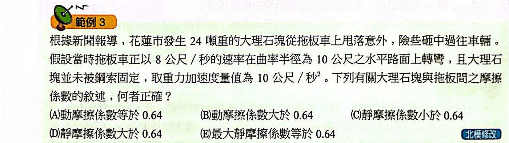
轉彎需要的向心加速度 v²/R ＝ 64/10 ＝ 6.4 m/s²，要由靜摩擦力提供：μsg ≥ 6.4 ⇒ 需要 μs ≥ 0.64。
大理石被甩出去 ⇒ 最大靜摩擦力不夠 ⇒ 靜摩擦係數小於 0.64。
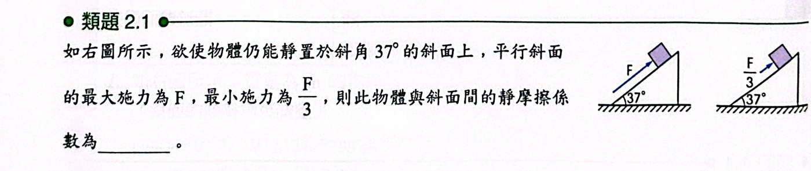
相減：2F/3 ＝ 2fmax；相加：4F/3 ＝ 2mg sin37° ⇒ F ＝ 0.9mg、fmax ＝ 0.3mg
μs ＝ 0.3mg ÷ (0.8mg) ＝ 3/8
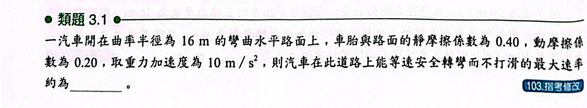
靜摩擦力提供向心力：μsmg ＝ mv²/R ⇒ v ＝ √(μsgR) ＝ √(0.4 × 10 × 16) ＝ 8 m/s
（沒有打滑時是靜摩擦力，用 μs，不是 μk。）
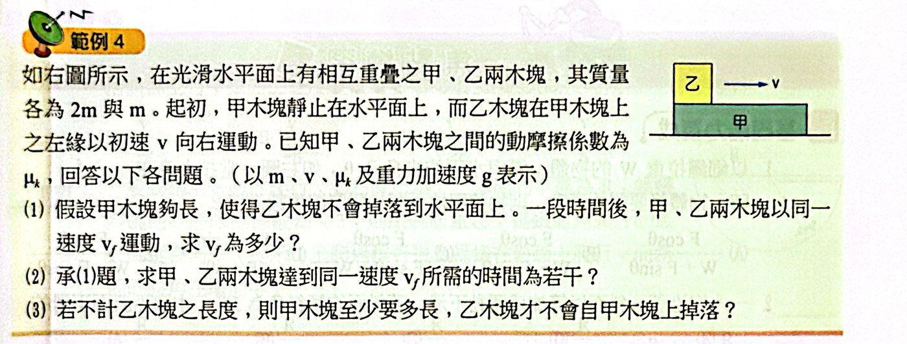
(1) 水平面光滑，系統水平方向不受外力，動量守恆：m v ＝ (m ＋ 2m)vf ⇒ vf ＝ v/3
(2) 乙受向後的動摩擦力 μkmg，減速度 μkg：
t ＝ (v − v/3)/(μkg) ＝ 2v/(3μkg)
(3) 甲被乙往前拉，加速度 μkmg/2m ＝ μkg/2。以甲為參考，乙的相對初速 v、相對減速度 μkg ＋ μkg/2 ＝ 3μkg/2：
相對位移 ＝ v²/(2 × 3μkg/2) ＝ v²/(3μkg)，甲至少要這麼長。
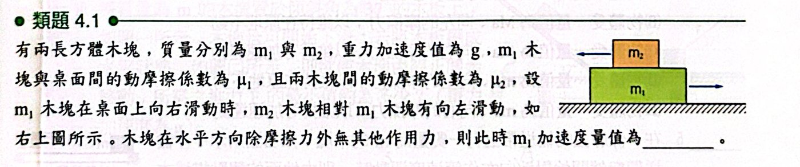
m1 向右滑，受兩個向左的摩擦力：
- 桌面：μ1(m1 ＋ m2)g（正向力要撐兩塊）
- m2：m2 相對 m1 向左滑，m2 受的摩擦力向右，反作用力使 m1 受 μ2m2g 向左
a ＝ [μ1(m1 ＋ m2) ＋ μ2m2]g / m1（減速）
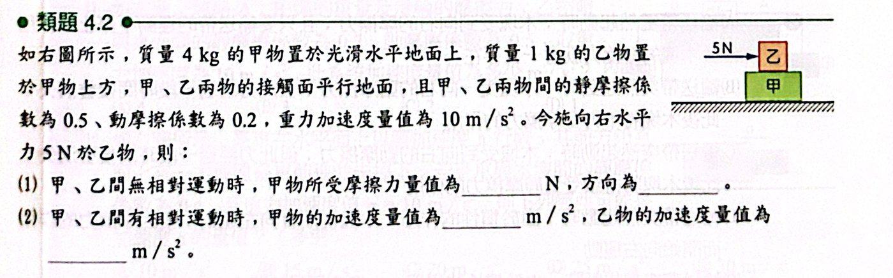
(1) 一起運動：a ＝ 5/(4 ＋ 1) ＝ 1 m/s²。甲只靠乙給的摩擦力加速：f ＝ 4 × 1 ＝ 4 N，向右
（需要的摩擦力 4 N ＜ 最大靜摩擦 0.5 × 10 ＝ 5 N，確實不會相對滑動。）
(2) 若相對滑動，摩擦力為動摩擦 0.2 × 10 ＝ 2 N：
- 甲：a ＝ 2/4 ＝ 0.5 m/s²
- 乙：a ＝ (5 − 2)/1 ＝ 3 m/s²
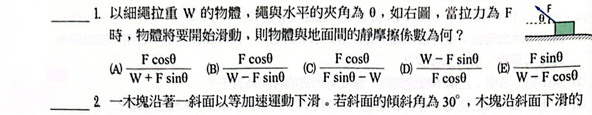
斜拉力的鉛直分量往上拉，正向力變小：N ＝ W − F sinθ
恰要滑動：F cosθ ＝ μs(W − F sinθ) ⇒ μs ＝ F cosθ/(W − F sinθ)
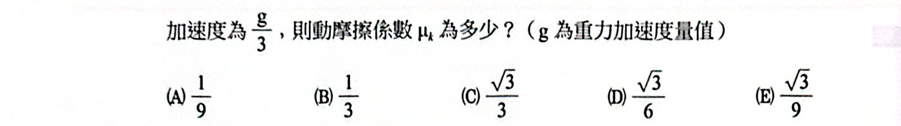
a ＝ g(sin30° − μkcos30°) ＝ g/3
½ − μk(√3/2) ＝ ⅓ ⇒ μk ＝ (1/6)(2/√3) ＝ √3/9
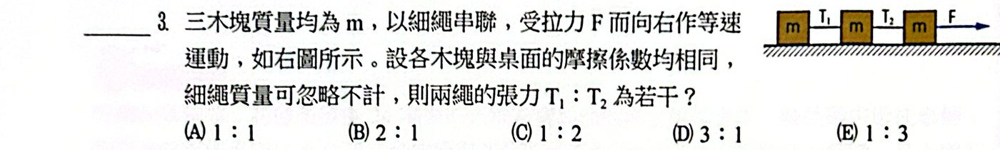
等速 ⇒ 每條繩只要抵消它後面木塊的摩擦力：T1 拉 1 塊、T2 拉 2 塊 ⇒ 1 : 2
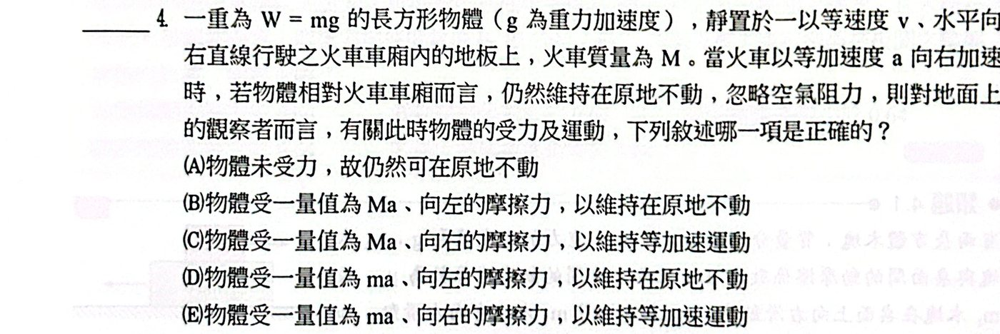
物體跟著車廂一起加速度 a 向右，水平方向只有摩擦力能提供 ⇒ 受 ma、向右的靜摩擦力（M 是火車質量，和物體無關）。
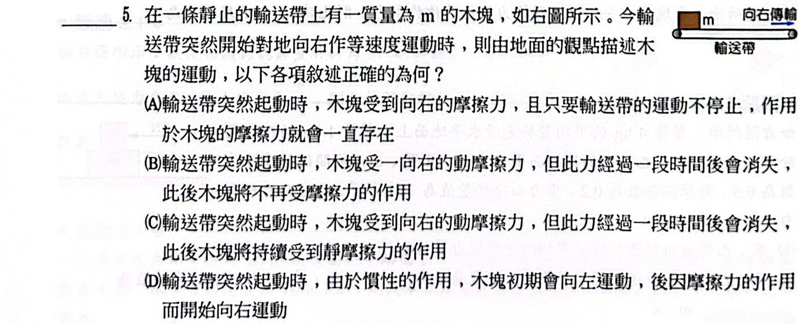
輸送帶一開動，木塊相對輸送帶向左滑 ⇒ 受向右的動摩擦力，開始加速；等到速度和輸送帶一樣，就沒有相對運動、也沒有相對運動的趨勢（輸送帶等速）⇒ 摩擦力消失。
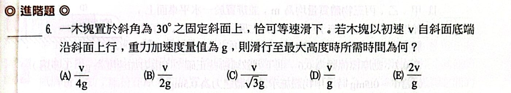
恰可等速滑下 ⇒ μk ＝ tan30°
上滑時減速度 ＝ g(sin30° ＋ μkcos30°) ＝ g(½ ＋ ½) ＝ g ⇒ t ＝ v/g
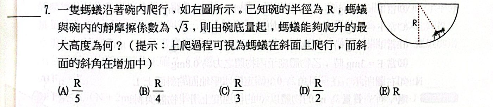
碗內某點的斜面傾角 ＝ 該點半徑與鉛直線的夾角 φ。最高處 tanφ ＝ μs ＝ √3 ⇒ φ ＝ 60°
高度 ＝ R − R cos60° ＝ R/2
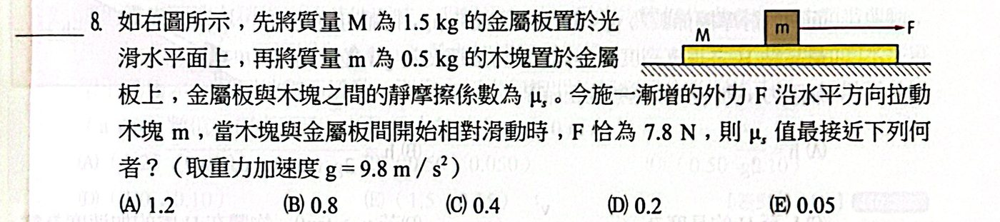
剛要相對滑動時兩者加速度還相同：a ＝ F/(M ＋ m) ＝ 7.8/2 ＝ 3.9 m/s²
金屬板只靠摩擦力加速：μsmg ＝ Ma ⇒ μs × 0.5 × 9.8 ＝ 1.5 × 3.9 ⇒ μs ≈ 1.2
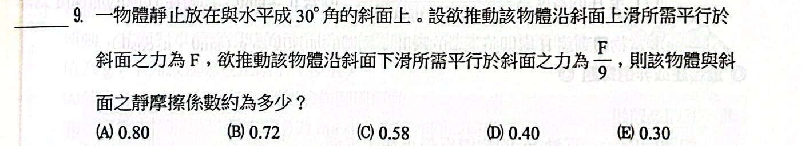
相減：F − F/9 ＝ mg ⇒ F ＝ 9mg/8 ⇒ f ＝ 9mg/8 − mg/2 ＝ 5mg/8
μs ＝ (5mg/8)/(mg cos30°) ＝ 5/(4√3) ≈ 0.72
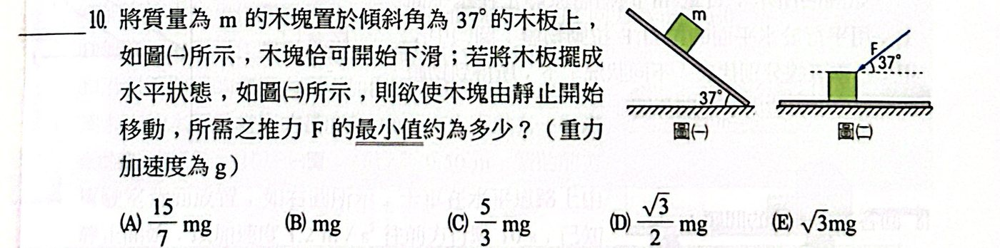
圖（一）恰開始下滑 ⇒ μs ＝ tan37° ＝ 3/4
圖（二）推力斜向下 37°：水平 F cos37°，同時把木塊壓緊 N ＝ mg ＋ F sin37°
0.8F ＝ ¾(mg ＋ 0.6F) ⇒ 0.35F ＝ 0.75mg ⇒ F ＝ 15mg/7
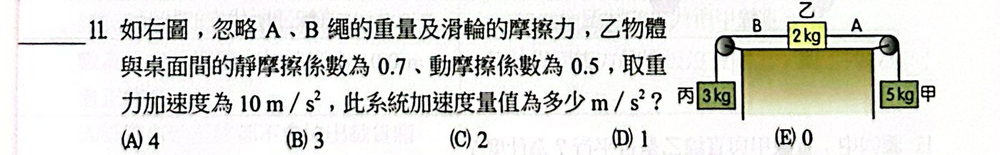
驅動力 ＝ (5 − 3) × 10 ＝ 20 N；乙的最大靜摩擦 0.7 × 20 ＝ 14 N ＜ 20 N ⇒ 會動
改用動摩擦 0.5 × 20 ＝ 10 N：a ＝ (20 − 10)/(5 ＋ 2 ＋ 3) ＝ 1 m/s²
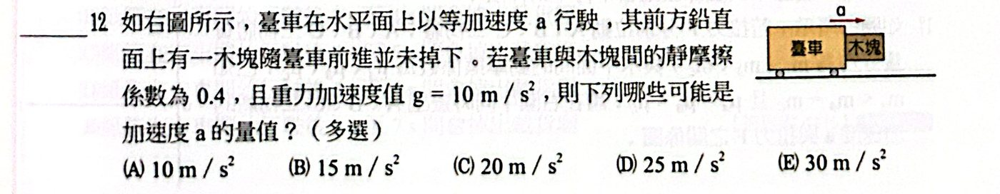
臺車推木塊的正向力 N ＝ ma（提供加速度），靜摩擦力要撐住重量：μsN ≥ mg
0.4a ≥ 10 ⇒ a ≥ 25 m/s²
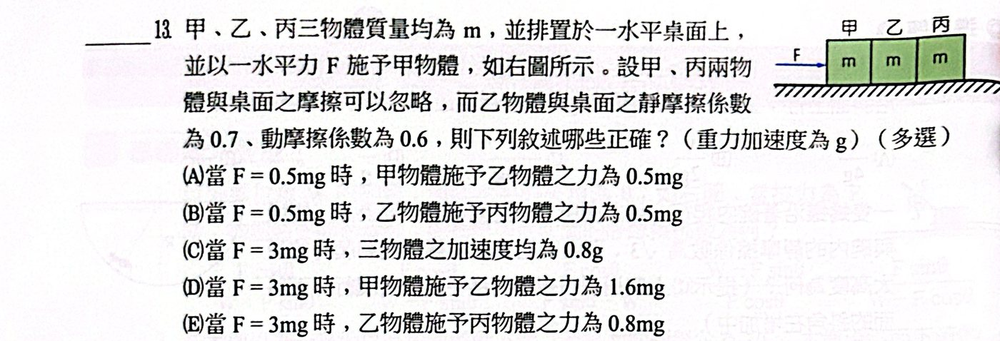
只有乙有摩擦（μs ＝ 0.7、μk ＝ 0.6）。
- F ＝ 0.5mg ＜ 0.7mg ⇒ 推不動，全部靜止。甲靜止 ⇒ 甲推乙 0.5mg ✓(A)；丙沒摩擦又靜止 ⇒ 乙推丙 0（B✗）
- F ＝ 3mg：a ＝ (3mg − 0.6mg)/3m ＝ 0.8g ✓(C)
- 甲推乙 ＝ F − ma ＝ 3mg − 0.8mg ＝ 2.2mg（D✗）
- 乙推丙 ＝ m × 0.8g ＝ 0.8mg ✓(E)
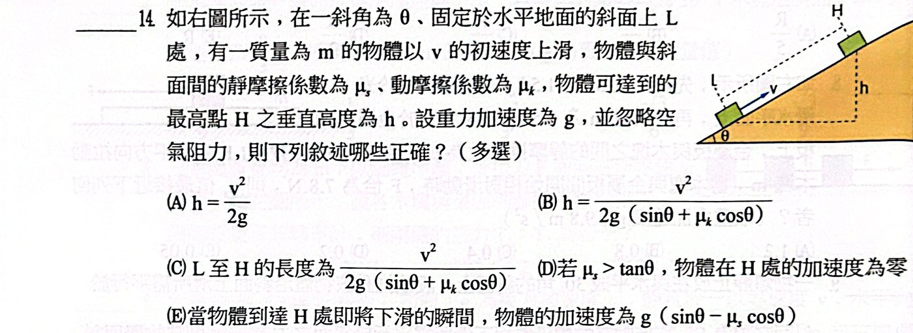
上滑減速度 g(sinθ ＋ μkcosθ) ⇒ LH ＝ v²/[2g(sinθ ＋ μkcosθ)] ✓(C)；h ＝ LH × sinθ，(A)(B) 都不對
- (D) ○ μs ＞ tanθ ⇒ 停在 H 不會滑回來，加速度為零
- (E) ✗ 一旦下滑就是動摩擦，a ＝ g(sinθ − μkcosθ)，應為 μk 不是 μs
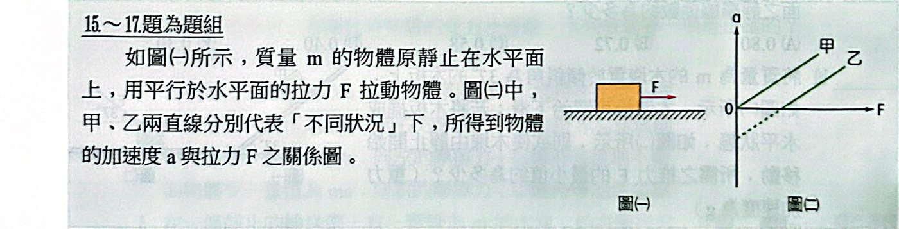
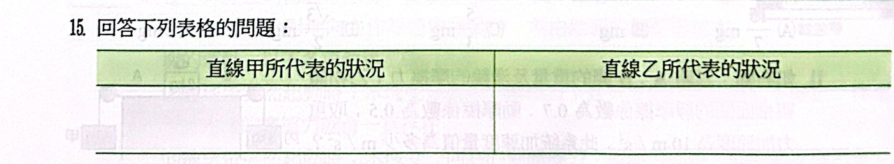
滑動後 ma ＝ F − μkmg ⇒ a ＝ F/m − μkg
- 斜率 ＝ 1/m，截距（延長到 F ＝ 0）＝ −μkg
- 甲、乙兩直線平行 ⇒ 質量相同；甲的延長線截距較高 ⇒ 甲的 μk 較小（例如同一物體放在較光滑的地面）
由 a ＝ F/m − μkg，a–F 直線的斜率只由質量決定。甲、乙是同一物體（質量相同）在不同接觸面上，所以兩線平行、只差在截距。
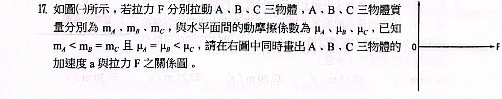
a ＝ F/m − μg：
- A：m 最小 ⇒ 斜率最大；延長線與 a 軸交於 −μAg
- B：m 較大 ⇒ 斜率較小；μB ＝ μA ⇒ 延長線與 A 交在 a 軸同一點
- C：mC ＝ mB ⇒ 與 B 平行；μC 最大 ⇒ 延長線截距最低（整條線在 B 的右下方）
各直線從 F ＝ μmg（開始滑動）之後才出現在 a ＞ 0 的區域。
力會讓物體「移動」，而讓物體「轉動」的是力矩。用扳手轉螺絲時你會發現：施力愈大、握得離螺絲愈遠、方向愈垂直扳手，就愈容易轉動──這三件事合起來就是力矩的定義。
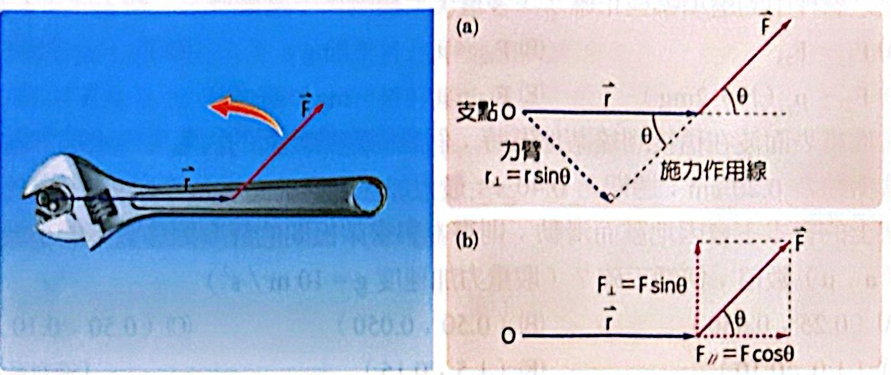
逆時針為正、順時針為負；或用右手定則：四指沿轉動方向捲，大拇指就是力矩方向。
物體要「完全靜止」需要兩個條件：不移動（合力為零）、不轉動（合力矩為零）。平面問題可以列出三條方程式，最多解三個未知數。
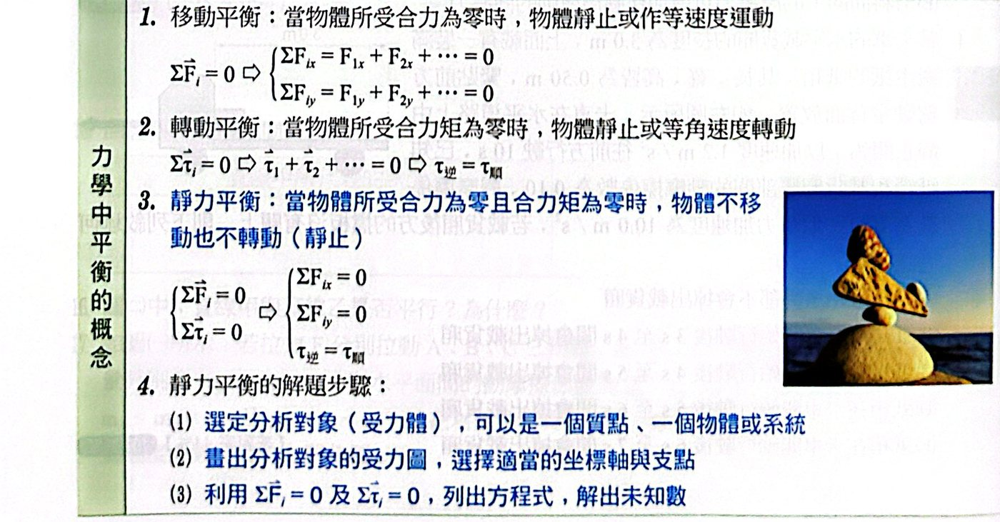
合力為零只保證質心不加速；但兩個大小相等、方向相反、不在同一直線上的力（力偶）合力為零，仍會讓物體轉起來──方向盤就是這樣轉的。所以還需要力矩也為零。
靜止的物體對任何一點的合力矩都是零。聰明的選法是：選在未知力最多、或不想求的那個力的作用點上，那些力的力矩直接變零，方程式一下就簡化了。
物體可看成由很多小質點組成，所有質點重力的合力就是物體的重量，它等效的作用點叫做重心 G。所以算力矩時，可以把整個重量集中在重心這一點上。
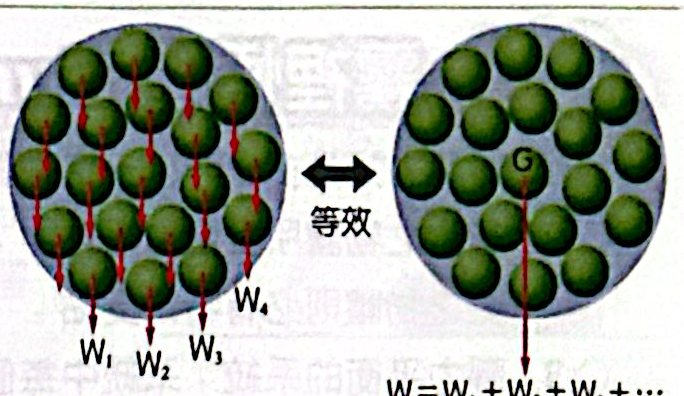
各質點重力對原點的力矩總和，要等於「總重集中在 G」的力矩：
W1x1 ＋ W2x2 ＋ … ＝ (W1 ＋ W2 ＋ …) xG
⇒ xG 就是「以重量為權重的加權平均位置」。
像蹺蹺板：重的那邊要坐得近一點才能平衡，所以重心會偏向比較重的一側。
只受三個力而平衡的物體有兩個很好用的性質。
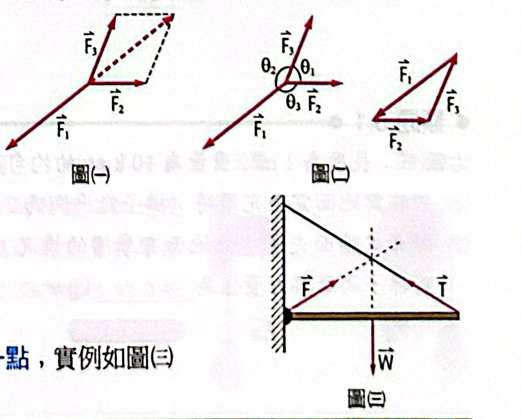
取其中兩個力作用線的交點當支點，這兩個力的力矩都是零；要總力矩為零，第三個力的力矩也必須是零 ⇒ 第三個力的作用線也通過這一點。
用法：梯子、吊桿題知道兩個力的方向，就能畫出交點，第三個力（常是鉸鏈或地面的作用力）的方向就確定了。
F1 ＋ F2 ＋ F3 ＝ 0，三個向量頭尾相接回到起點 ⇒ 封閉三角形。對這個三角形用正弦定理，就得到拉密定理（θi 是另外兩力之間的夾角）。
三個力之間的夾角已知時，拉密定理比分解到 x、y 軸快得多。
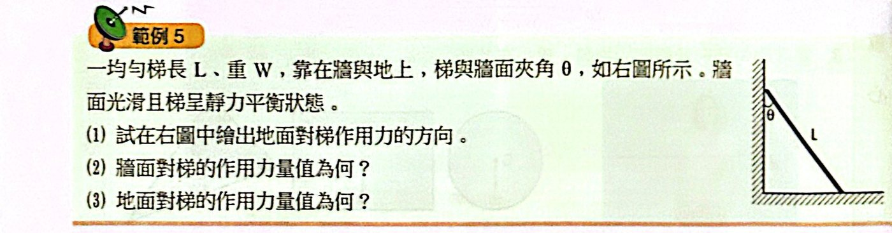
受力：重力 W（在中點）、牆的正向力 N1（水平，牆光滑沒有摩擦）、地面作用力（正向力 N2 ＋ 摩擦力 f）。
(1) 三力平衡要共點：W 的鉛直作用線和 N1 的水平作用線交於一點，地面對梯的作用力必定指向這一點（斜向上、偏向牆）。
(2) 對梯腳取力矩（地面兩個力都消失）：
N1 × L cosθ ＝ W × (L/2) sinθ ⇒ N1 ＝ (W/2) tanθ
(3) 鉛直：N2 ＝ W；水平：f ＝ N1
地面作用力 ＝ √(N2² ＋ f²) ＝ W√(1 ＋ tan²θ/4)
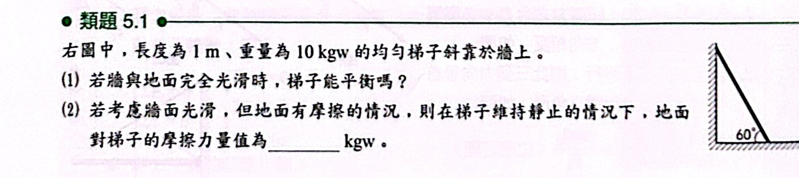
(1) 牆的正向力是水平的，地面若也光滑就沒有任何水平力能抵消它 ⇒ 無法平衡，梯子會滑倒。
(2) 梯與地面夾 60°、與牆夾 30°：f ＝ N1 ＝ (W/2) tan30° ＝ 5 × (1/√3) ＝ 5√3/3 kgw
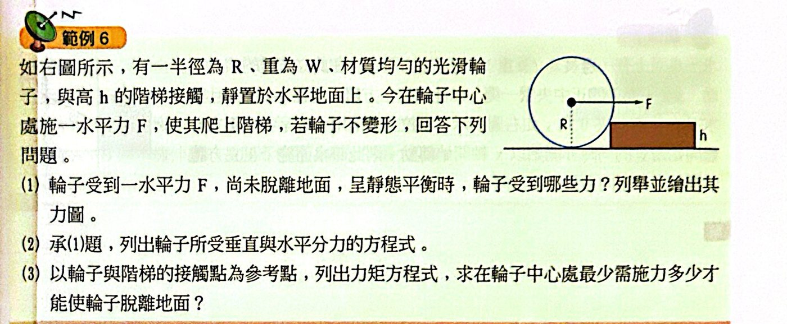
(1) 輪子光滑，階梯邊角對輪子的力 N' 垂直輪緣 ⇒ 沿半徑指向輪心。
設邊角到輪心的水平距離 d ＝ √(R² − (R − h)²) ＝ √(2Rh − h²)
(2)
- 水平：F ＝ N' × d/R
- 鉛直：N ＋ N' × (R − h)/R ＝ W
(3) 對邊角接觸點取力矩（N' 消失）：
F(R − h) ＋ N·d ＝ W·d
恰離地 N ＝ 0 ⇒ F ＝ W√(2Rh − h²)/(R − h)
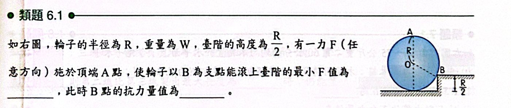
以 B 為支點，W 的力臂 ＝ O 到 B 的水平距離 ＝ √(R² − (R/2)²) ＝ (√3/2)R
F 要最小 ⇒ 力臂要最大 ⇒ F 垂直 AB，力臂 ＝ AB。
A 在頂端，AB² ＝ (√3R/2)² ＋ (3R/2)² ＝ 3R² ⇒ AB ＝ √3R
F × √3R ＝ W × (√3/2)R ⇒ F ＝ W/2
此時 F 與水平夾 30°，分量 (√3W/4, W/4)；B 點抗力 ＝ −(W ＋ F)：
√[(√3W/4)² ＋ (3W/4)²] ＝ (√3/2)W
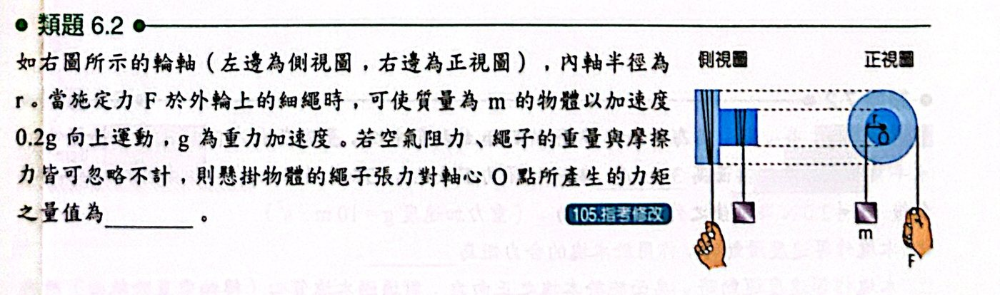
物體以 0.2g 向上加速：T − mg ＝ 0.2mg ⇒ T ＝ 1.2mg
對軸心的力矩 ＝ T × r ＝ 1.2mgr
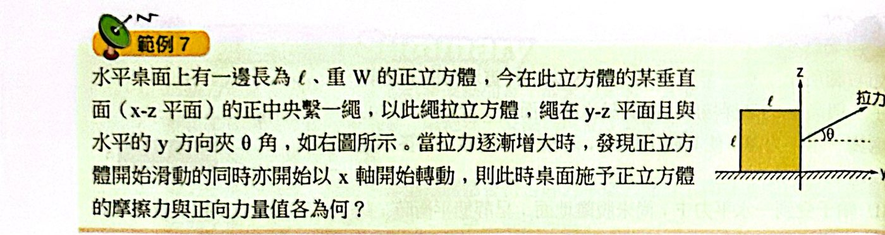
拉力 F 作用在前方面的中央（高度 ℓ/2）。開始翻轉時以前方底邊為轉軸，此時正向力和摩擦力都集中在這條邊上（力矩為零）。
- F 的鉛直分量作用點就在前方面上，對底邊的水平力臂為 0；水平分量 F cosθ 的力臂 ℓ/2
- 重力 W 的力臂 ℓ/2
力矩：F cosθ × ℓ/2 ＝ W × ℓ/2 ⇒ F cosθ ＝ W
- 摩擦力 ＝ F cosθ ＝ W
- 正向力 ＝ W − F sinθ ＝ W − W tanθ ＝ W(1 − tanθ)
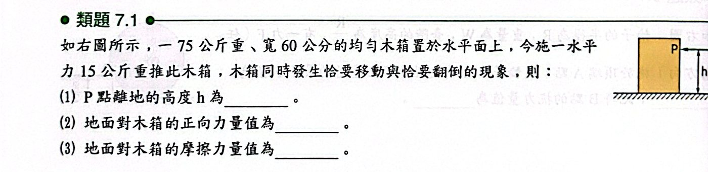
(1) 恰要翻倒時以前方底邊為轉軸：15 × h ＝ 75 × 30 ⇒ h ＝ 150 cm
(2) 鉛直平衡：N ＝ 75 kgw
(3) 恰要移動、水平平衡：f ＝ 15 kgw
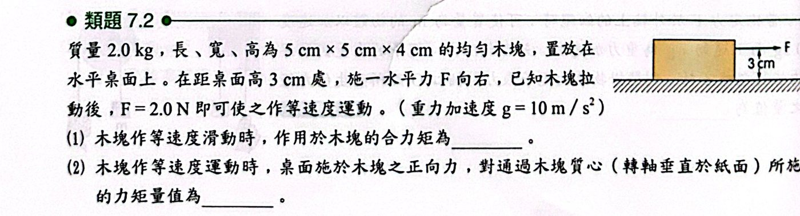
(1) 等速運動 ⇒ 合力為零 ⇒ 對任一點合力矩也為零 ⇒ 0
(2) 對質心（高 2 cm）取力矩，順時針方向（使木塊往前傾）的有：
- F（在質心上方 1 cm）：2.0 × 0.01 ＝ 0.02 N·m
- 摩擦力 f ＝ 2.0 N（向左、在質心下方 2 cm）：2.0 × 0.02 ＝ 0.04 N·m
合計 0.06 N·m，所以正向力的力矩要是逆時針 0.06 N·m（正向力的作用點偏向前方）。
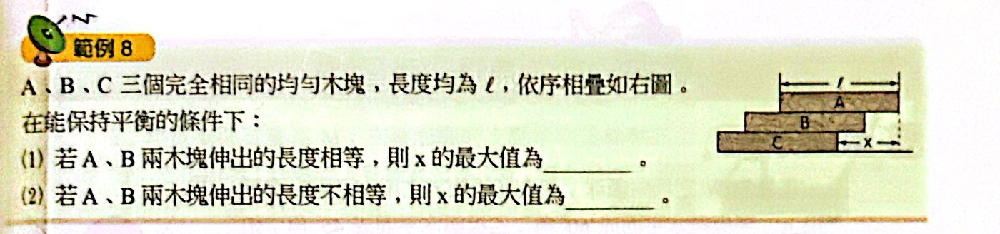
每一層「上方所有木塊的重心」都不能超出下一塊的邊緣。
(1) 每層伸出 d：
- A 在 B 上：d ≤ ℓ/2
- A＋B 在 C 上：以 C 邊緣為原點，B 中心在 d − ℓ/2、A 中心在 2d − ℓ/2，平均 ≤ 0 ⇒ d ≤ ℓ/3
取 d ＝ ℓ/3 ⇒ x ＝ 2d ＝ 2ℓ/3
(2) 各層可以不同：最上層伸出 ℓ/2，第二層的伸出讓 A＋B 的重心剛好在 C 邊緣 ⇒ ℓ/4
x ＝ ℓ/2 ＋ ℓ/4 ＝ 3ℓ/4
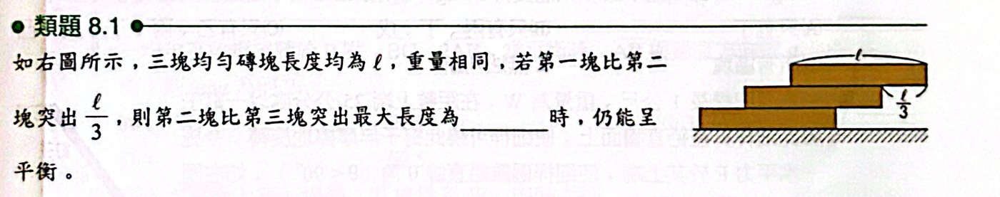
第二塊比第三塊伸出 y：第二塊中心 y − ℓ/2、第一塊中心 y ＋ ℓ/3 − ℓ/2 ＝ y − ℓ/6
兩塊平均 y − ℓ/3 ≤ 0 ⇒ y ＝ ℓ/3
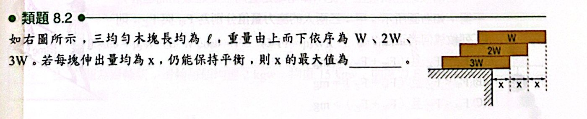
以每一層下方的邊緣為原點列條件：
- W 在 2W 上：x ≤ ℓ/2
- W＋2W 在 3W 上：[2W(x − ℓ/2) ＋ W(2x − ℓ/2)]/3W ≤ 0 ⇒ x ≤ 3ℓ/8
- 三塊在桌上：3W(x − ℓ/2) ＋ 2W(2x − ℓ/2) ＋ W(3x − ℓ/2) ≤ 0 ⇒ 10x ≤ 3ℓ ⇒ x ≤ 3ℓ/10
取最嚴格的 x ＝ 3ℓ/10
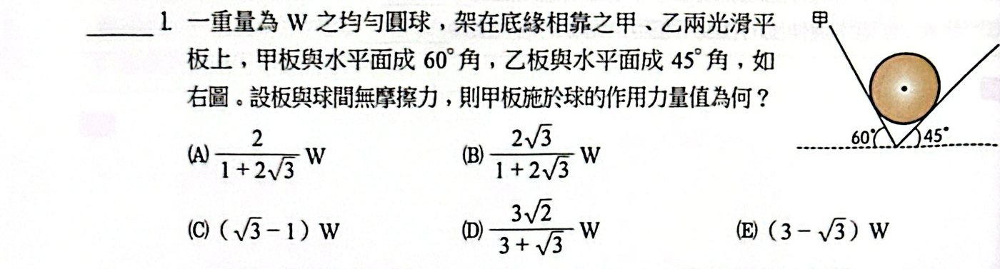
兩板的正向力垂直板面：甲板與鉛直夾 60°、乙板與鉛直夾 45°。
- 水平：N甲 sin60° ＝ N乙 sin45°
- 鉛直：N甲 cos60° ＋ N乙 cos45° ＝ W
sin45° ＝ cos45°，所以 N乙cos45° ＝ N甲sin60°，代入：N甲(½ ＋ √3/2) ＝ W
N甲 ＝ 2W/(1 ＋ √3) ＝ (√3 − 1)W
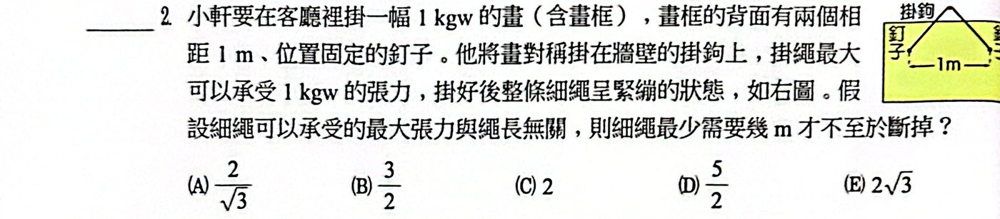
兩段繩子張力相等且對稱：2T cosα ＝ 1 kgw（α 為繩與鉛直夾角），T ＝ 1 kgw ⇒ cosα ＝ ½ ⇒ α ＝ 60°
每段繩的水平長度 0.5 m ⇒ 每段長 0.5/sin60° ＝ 1/√3 m ⇒ 總長 2/√3 m
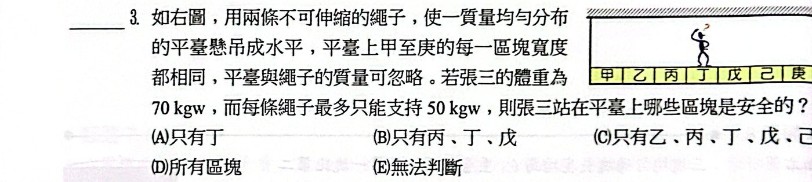
平臺分 7 等分，人站在距左端 x 處（L 為全長）：
- 左繩張力 ＝ 70(1 − x/L) ≤ 50 ⇒ x ≥ 2L/7
- 右繩張力 ＝ 70x/L ≤ 50 ⇒ x ≤ 5L/7
只有完全在 2/7～5/7 之間的丙、丁、戊安全。
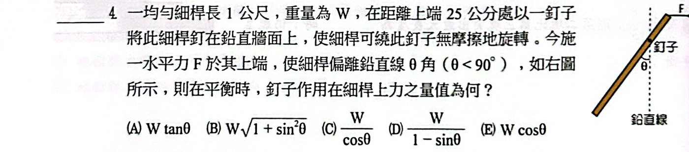
對釘子取力矩：F × 0.25cosθ ＝ W × 0.25 sinθ（重心在釘子下方 25 cm）⇒ F ＝ W tanθ
釘子的力抵消 F 與 W 的合力：√(W² ＋ W²tan²θ) ＝ W/cosθ
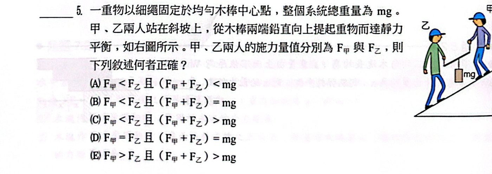
三個力都是鉛直的，重物掛在棒的中點。對中點取力矩：兩人的力臂（水平距離）相等 ⇒ F甲 ＝ F乙；鉛直平衡 ⇒ F甲 ＋ F乙 ＝ mg。
（斜坡只是讓棒傾斜，水平力臂仍相等。）
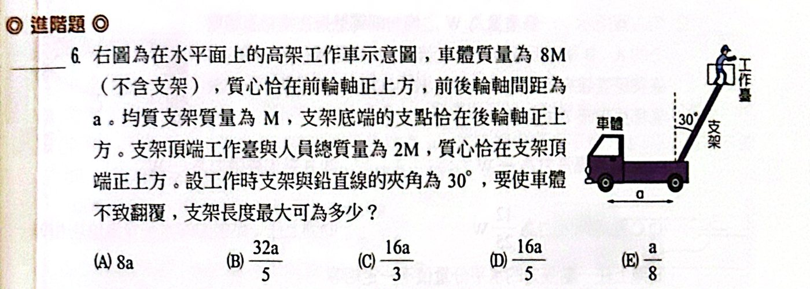
恰要翻覆時以後輪為支點，前輪不受力：
車體 8M 在前輪正上方，力臂 a；支架（重心在 L/2）與工作臺（在頂端）向後伸出，水平力臂 (L/2)sin30°、L sin30°
8Ma ＝ M(L/4) ＋ 2M(L/2) ⇒ 8a ＝ 5L/4 ⇒ L ＝ 32a/5
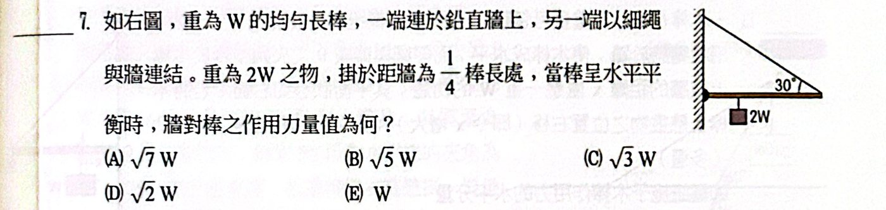
對牆上的鉸鏈取力矩（棒長 L）：T sin30° × L ＝ W(L/2) ＋ 2W(L/4) ＝ WL ⇒ T ＝ 2W
- 水平：牆的水平力 ＝ T cos30° ＝ √3W
- 鉛直：牆的鉛直力 ＝ 3W − T sin30° ＝ 2W
牆的作用力 ＝ √(3 ＋ 4)W ＝ √7W
把挖下的小圓板（面積占 1/4）從 A (0, 5) 移到 B (5, 0)，總質量不變。
質心移動 ＝ ¼ × (位置差) ＝ ¼ × (5, −5) ⇒ 距 O：¼ × 5√2 ＝ 5√2/4 cm
AB 長 L、質量 m；BC 長 2L、質量 2m，兩邊互相垂直。懸在 B，重心要在 B 正下方：
AB 的重心水平偏 (L/2)sinα，BC 的重心水平偏 L cosα（反方向）
m(L/2)sinα ＝ 2m·L cosα ⇒ tanα ＝ 4
等速移動且不轉動 ⇒ 合力、合力矩都為零。
- 水平：F cosθ ＝ f（地面摩擦）
- 對軸心力矩：繩拉力 F 的力矩 Fr ＝ 摩擦力的力矩 fR
⇒ Fr ＝ F cosθ × R ⇒ cosθ ＝ r/R
最上面的滑輪固定在天花板，下面兩個是動滑輪；每條繩子一端綁在木板上。
- 繩 3（最小滑輪）：張力 F
- 最小滑輪（重 2）掛在繩 2 上：T2 ＝ 2F ＋ 2
- 中滑輪（重 2）掛在繩 1 上：T1 ＝ 2T2 ＋ 2 ＝ 4F ＋ 6
木板被三條繩子往上拉：T1 ＋ T2 ＋ F ＝ 15 ⇒ 7F ＋ 8 ＝ 15 ⇒ F ＝ 1 kgw
解得 TA ＝ 3W/5、TB ＝ 4W/5（B✗）
最低點 C 的切線水平，張力 ＝ 水平分量 ＝ 0.8 × 0.6W ＝ 12W/25 ✓
任一小段繩子水平方向只受兩端張力 ⇒ 張力的水平分量處處相等（D○、E✗）。
對 O 取力矩：T sinθ × L ＝ Wx ⇒ x 增大，T 增大（D○）
- 樞紐水平分量 ＝ T cosθ，增大（A○）
- 樞紐鉛直分量 ＝ W − T sinθ ＝ W(1 − x/L)，減小（B✗）
- 樞紐力與水平夾角的 tan ＝ 鉛直/水平，減小（C✗）
- 三力交點在 W 的作用線上，x 右移時交點更靠近 P（E✗）
傾角增大時先到 tanθ ＝ 0.5 ⇒ 先下滑。
梯重忽略。鉛直：地面正向力 N2 ＝ 800 N，不變。
對梯腳取力矩：N1 × 20cos37° ＝ 800 × s sin37°（s 為沿梯爬的距離）⇒ 爬愈高 N1 愈大
水平：摩擦力 f ＝ N1，也增加。
s ＝ 10 m：N1 × 16 ＝ 800 × 6 ⇒ N1 ＝ 300 N；N2 ＝ 800 N；f ＝ 300 N
爬到頂端 s ＝ 20：N1 × 16 ＝ 800 × 12 ⇒ N1 ＝ 600 N ⇒ 需要摩擦力 600 N
最大靜摩擦 ＝ 0.6 × 800 ＝ 480 N ＜ 600 N ⇒ 梯子會滑倒。
第一、二張之間的正向力 ＝ N ＋ mg；第一張滑出 ⇒ 動摩擦 F12 ＝ μk(N ＋ mg)（E○、B✗）
第二張不動 ⇒ 第三張給它的靜摩擦剛好抵消 F12：F23 ＝ F12（A○、C✗）
靜摩擦不超過上限：F23 ≤ μs(N ＋ 2mg)（D○）
ω ＝ 2π/0.40 ＝ 5π rad/s，a ＝ Aω² ＝ 0.002 × 25π² ≈ 0.50 m/s²
書本要靠靜摩擦力跟著加速：μg ≥ a ⇒ μ ≥ 0.050
（同圓周運動的傾斜彎道）
- (A) ○ 平路不靠摩擦力就沒有水平的力提供向心力
- (B) ✗ 不一定需要摩擦力
- (C) ✗ 無摩擦時 N ＝ mg/cosθ
- (D) ○ v ＝ √(Rg tanθ)
- (E) ○ 沿斜面向下的摩擦力有指向圓心的水平分量
卡車加速度 1.2 ＞ 最大靜摩擦能給的 0.11 × 10 ＝ 1.1 ⇒ 紙箱會相對車廂滑動，改受動摩擦 a ＝ 0.10 × 10 ＝ 1.0 m/s²
相對車廂向後的加速度 0.2 m/s²；紙箱重心要後退 3.0 − 0.25 ＝ 2.75 m 才掉出：
½ × 0.2 × t² ＝ 2.75 ⇒ t ≈ 5.2 s ⇒ 5 s 至 6 s 之間（在 10 s 內，卡車仍在加速）
對 O 取力矩（臂長 L）：OP 方向 60°、鋼索 PS 方向朝左下 30°，兩者夾 150°，鋼索的力矩 ＝ T·L sin150° ＝ TL/2
重力力矩：臂 2000 × (L/2)cos60° ＋ 重物 1600 × L cos60° ＝ 500L ＋ 800L ＝ 1300L
T/2 ＝ 1300 ⇒ T ＝ 2600 N
小球受：重力 mg、兩邊的正向力 F（垂直鑷子臂）、兩邊的靜摩擦力 f（沿臂向上）。
設鑷子每邊與鉛直線夾 α，接觸點在臂末端且臂與球相切 ⇒ tanα ＝ R/L。
正向力垂直臂面指向球心，有向下的分量 F sinα；摩擦力沿臂向上，鉛直分量 f cosα。
鉛直：2f cosα ＝ mg ＋ 2F sinα ⇒ f ＝ (mg/2 ＋ F sinα)/cosα
f ≤ μF ⇒ μ ≥ tanα ＋ mg/(2F cosα) ＝ R/L ＋ mg√(L² ＋ R²)/(2FL)
以 20 cm 處為支點：物體 50 g × (25 − 20) ＝ 尺 M × (20 − 15) ⇒ M ＝ 50 g
對 O 取力矩：W、f、牆與地板的正向力都通過 O，力矩為零；只剩 F（力臂 R）與兩處靜摩擦力。
- (A) ○ (B) ✗ 靜摩擦力的總力矩要抵消 F 的力矩 ⇒ 量值 FR
- (C) ○ (D) ✗ W 通過 O，力矩為零
- (E) ✗ 地板還有正向力，F 與 W 不一定相等
(a) 踏板垂直力 F、力臂 L ⇒ τ ＝ FL
(b) 鏈條張力 T ＝ FL/r38；對後齒盤（19 齒）的力矩 T × r19 ＝ FL × 19/38 ＝ FL/2，後齒盤與後輪同軸，所以後輪受的力矩也是 FL/2。
後輪力矩 ＝ FL × (r後/r前)，後齒盤愈大力矩愈大 ⇒ 選 26 齒：τ ＝ FL × 26/38 ＝ 13FL/19
向前的最大驅動力 ＝ τ/R ＝ 13FL/(19R)
（這就是爬坡要換到後面大齒盤的原因：省力但踩得比較快。）